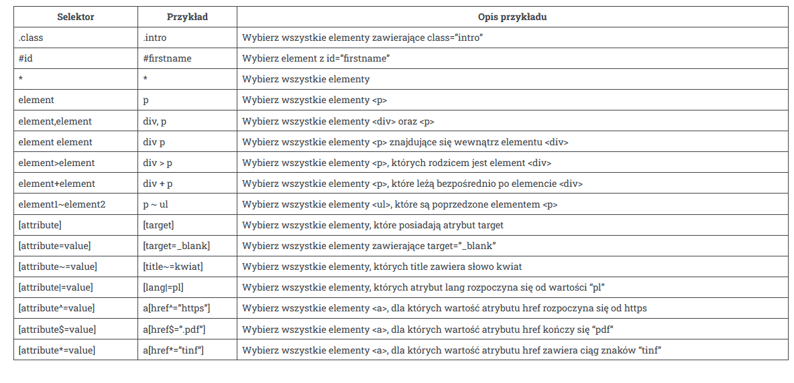

Kurs CSS - wszystko co musisz wiedzieć, aby zacząć.
1. Trochę słów o CSS
CSS (Cascading Style Sheets) jest językiem używanym do opisu prezentacji i formatowania dokumentów HTML (Hypertext Markup Language). Jest on używany do dodawania kolorów, czcionek, układu i innych stylów do stron internetowych. CSS jest potężnym narzędziem, które pozwala programistom na oddzielenie stylu strony internetowej od jej zawartości, co ułatwia jej utrzymanie i aktualizację. Dzięki CSS, projektanci mogą kontrolować wygląd tekstu, obrazów i innych elementów na stronie internetowej, czyniąc ją bardziej atrakcyjną wizualnie i łatwą do odczytania. CSS używa zestawu selektorów i par właściwość-wartość do definiowania reguł stylu dla różnych elementów na stronie internetowej. Język ten jest stale rozwijany, a nowe funkcje są dodawane regularnie, aby poprawić doświadczenie użytkownika i wspierać nowoczesne trendy w projektowaniu.
2. Model CSS
Poniżej kod HTML, który zostanie poddany obróbce
<p>To jest paragraf, który dostał nowego wyglądu</p>
A tu skrypt CSS, który nada mu stylu:
p {
font-size: 25px;
color: red;
margin: 10px;
padding: 10px;
border: 1px solid;
}
3. Podpinanie kodu
I sposób - Podłączenie pliku CSS
Najpopularniejszym i uniwersalnym sposobem jest podłączenie do pliku HTML:
<link href="sciezka/do/pliku/plik.css" rel="stylesheet">
Trzeba pamiętać, żeby umieścić skrypt między tagami head
Oto przykładowy kod:
<!DOCTYPE html>
<html lang="pl">
<head>
<meta charset="utf-8">
<meta name="viewport" content="width=device-width, initial-scale=1">
<title>Tytuł strony</title>
<link href="style.css" rel="stylesheet">
</head>
II sposób - wstawienie CSS w pliku HTML
Drugim sposobem jest osadzenie stylów CSS wewnątrz kodu HTML pomiędzy znacznikami style.
Ten sposób jest przydatny tylko w małych projektach lub gdy jest potrzebny tylko w poszczególnych
fragmentach kodu.
Oto przykładowy kod:
<!DOCTYPE html>
<html lang="pl">
<head>
<meta charset="utf-8">
<meta name="viewport" content="width=device-width, initial-scale=1">
<title>Tytuł strony</title>
</head>
<body>
<style>
body {
background: yellow;
color: #f5f5f5;
margin: 10%;
text-align: right;
}
</style>
<h1>Witaj Świecie!</h1>
</body>
III sposób - wstawienie CSS w poszczególnych tagach
Kiedy chcemy zmienić styl konkretnego elementu na stronie, należy przypisać wartości CSS za pomocą atrybutu style="".
Oto przykładowy kod:
<!DOCTYPE html>
<html lang="pl">
<head>
<meta charset="utf-8">
<meta name="viewport" content="width=device-width, initial-scale=1">
<title>Tytuł strony</title>
</head>
<body>
<main style="background: #f5f5f5; color: rgba(0, 0, 0, 0.4); padding: 20%; text-align: left;">
<h1 style="color: purple">Witaj Świecie!</h1>
<h2>Witaj Świecie!</h2>
</main>
</body>
4. Selektory
Selektory są przydatne, by wskazać dany element,tag w HTML, który chcemy edytować.
5. Właściwości
Właściwości CSS jest szeroka gama i trzeba podzielić je na kategorie. Wyróżniamy poszczególne typy:
- Tekst - właściwości odpowiedzialne za formatowanie cech wyglądu tekstu.
Przykład: text-align: right; - przesuwa tekst na prawo. - Czcionka - właściwości odpowiedzialne za formatowanie wyglądu czcionki tekstu.
Przykład: font-size: 12pt; - rozmiar czcionki równy 12pt
lub font-familly: Arial, sans-serif; - zmienia typ czcionki na typ z rodziny Arial.
- Tło - właściwości odpowiedzialne za formatowanie cech wyglądu tła .
Przykład: background-color: white; - zmienia kolor tła na biały. - Rozmiary - właściwości odpowiedzialne za formatowanie szerokości i wysokości.
Przykład: width: 50%; - szerokość elementu wynosi - Marginesy - właściwości odpowiedzialne za formatowanie wartości marginesów wewnętrznych i zewnętrznych.
Przykład: margin: 20px - wszystkie marginesy zewnętrzne wynoszą 20px. - Obramowanie - właściwości odpowiedzialne za formatowanie cech wyglądu obramowania.
Przykład border-style: solid - zmienia styl obramowania na solid, czyli linia ciągła.
Kolory
Kolory w CSS (Kaskadowych Arkuszach Stylów) są używane do nadawania kolorów elementom HTML na stronach internetowych. W CSS, kolory można ustawić za pomocą różnych formatów, takich jak nazwy kolorów, wartości heksadecymalne, wartości RGB, wartości HSL i wiele innych. Oto niektóre z najpopularniejszych sposobów ustawiania kolorów w CSS:
- Nazwy kolorów: CSS posiada wbudowany zestaw nazw kolorów, takich jak "red", "blue", "green", itp. Można je użyć bezpośrednio w atrybucie koloru CSS. Na przykład:
p {color: red;}
p {
color: #ff0000; /* czerwony */
background-color: #00ff00; /* zielony */
}
p {
color: rgb(255, 0, 0); /* czerwony */
background-color: rgb(0, 255, 0); /* zielony */
}
p {
color: hsl(0, 100%, 50%); /* czerwony */
background-color: hsl(120, 100%, 50%); /* zielony */
}
Wartości kolorów w CSS można stosować w różnych atrybutach, takich jak "color", "background-color", "border-color" i innych, aby dostosować wygląd elementów na stronie internetowej.
6. Marginesy
Marginesy zewnętrzne i wewnętrzne w CSS są używane do kontrolowania odstępów wokół elementów HTML na stronach internetowych. Oto krótkie wyjaśnienie różnicy między marginesami zewnętrznymi a wewnętrznymi oraz jak można je ustawić za pomocą kursu CSS:
Margines wewnętrzny
Marginesy wewnętrzne: Marginesy wewnętrzne są stosowane do kontrolowania odstępów między zawartością elementu HTML a jego ramką. Marginesy wewnętrzne wpływają na rozmiar samego elementu. Można je ustawić za pomocą właściwości CSS takich jak "padding-top", "padding-right", "padding-bottom" i "padding-left". Na przykład:
div {
padding-top: 10px;
padding-right: 20px;
padding-bottom: 10px;
padding-left: 20px;
}Podobnie jak w przypadku marginesów zewnętrznych, można również użyć skróconej notacji "padding", aby ustawić wszystkie marginesy naraz:
div {
padding: 10px 20px; /* górny/dolny margines: 10px, prawy/lewy margines: 20px */
}Margines zewnętrzny
Marginesy zewnętrzne: Marginesy zewnętrzne są stosowane do kontrolowania odstępów między elementem HTML a jego otoczeniem, czyli innymi elementami na stronie. Marginesy zewnętrzne nie wpływają na rozmiar samego elementu, ale mogą wpłynąć na układ strony jako całości. Można je ustawić za pomocą właściwości CSS takich jak "margin-top", "margin-right", "margin-bottom" i "margin-left". Na przykład:
div {
margin-top: 10px;
margin-right: 20px;
margin-bottom: 10px;
margin-left: 20px;
}
Można również użyć skróconej notacji "margin", aby ustawić wszystkie marginesy naraz:
div {
margin: 10px 20px; /* górny/dolny margines: 10px, prawy/lewy margines: 20px */
}